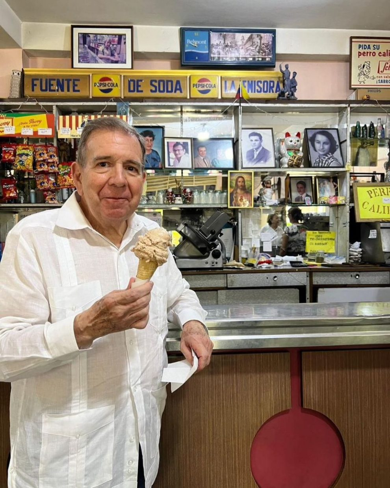
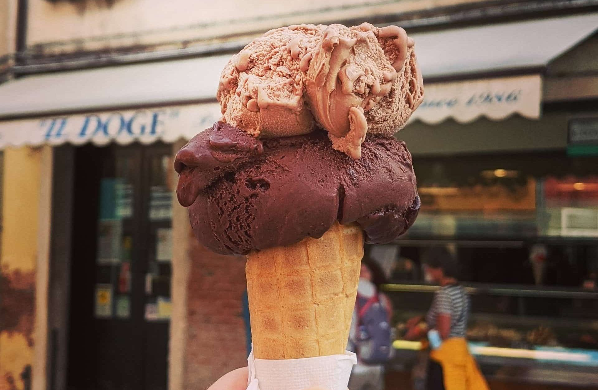
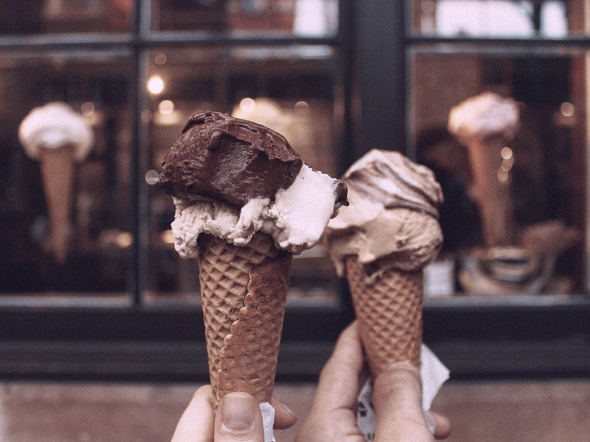

📜 Nuestra Historia
NUUK nació en el corazón de Lima con el sueño de ofrecer helados que capturan la esencia de la gastronomía peruana. Cada uno de nuestros sabores cuenta una historia de tradición y calidad. Desde nuestras raíces hasta hoy, seguimos comprometidos con la excelencia.
🏅 Calidad Artesanal
Nos enorgullece utilizar ingredientes 100% naturales y locales en la creación de nuestros helados. Desde la fruta fresca hasta los lácteos, todo es seleccionado con cuidado para asegurar la mejor calidad. Nuestros procesos artesanales garantizan un sabor inigualable.
🌱 Sostenibilidad
En NUUK, estamos comprometidos con la sostenibilidad. Trabajamos de la mano con pequeños productores locales para asegurar un impacto positivo en nuestra comunidad. Apoyamos prácticas agrícolas sostenibles y buscamos minimizar nuestro impacto ambiental.
💪 Nuestro Compromiso
Nuestra misión es ofrecer no solo un producto delicioso, sino también una experiencia memorable. Cada visita a NUUK es una invitación a disfrutar del arte del buen helado, donde cada detalle cuenta para crear momentos inolvidables.